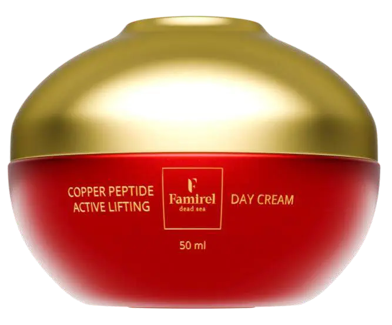
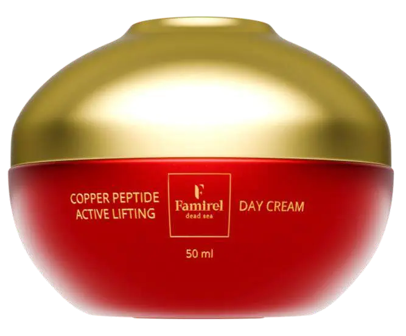
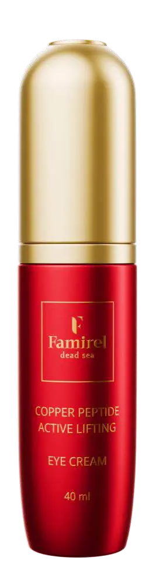
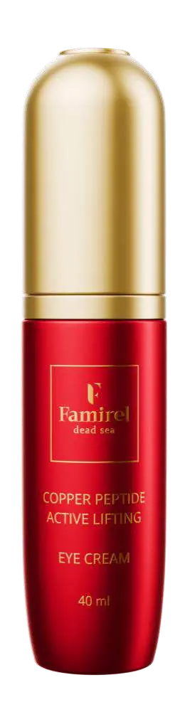
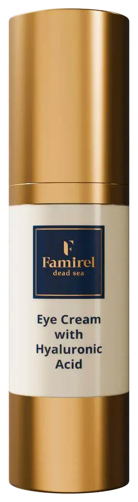
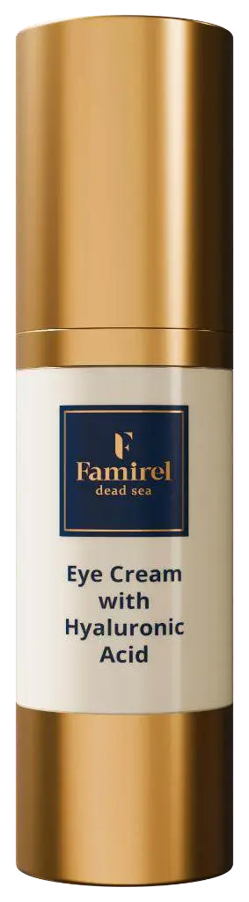

Catalogue


 

 



 



Papain-Enzym: Hilft bei der Entfernung von Hyperkeratose (übermäßiger Aufbau von abgestorbenen Zellen), hellt Pigmentierungen auf, hat eine antimikrobielle Wirkung und gleicht den Hautton sowie die Textur aus.
Aloe- und Gurkenextrakte: Sorgen für eine feuchte und sanfte Reinigung.
Kamille, Ingwer- und Schwarzkümmel-Extrakte: Schaffen einen antibakteriellen Effekt, der das Bakterienwachstum und entzündliche Prozesse verhindert.
Glycerin: Befeuchtet und macht die Haut weich.
Ingwerextrakt: Reduziert Entzündungen, reguliert die Talgproduktion und verfeinert die Poren.
Vitamin E: Ein Antioxidans, das die Haut vor Photoalterung schützt und Irritationen lindert.
Avocadoöl: Stellt die Lipidbarriere der Haut wieder her und verbessert den Teint.
Mineralien aus dem Toten Meer: Verjüngen die Haut und spenden natürliche Feuchtigkeit.
Das Gel hat einen keratolytischen Effekt, exfoliert sanft abgestorbene Zellen und führt zu einem gesunden Hautbild. Es ist für die sanfte, aber effektive Reinigung des Gesichts von Unreinheiten und Make-up entwickelt.
Aloe-, Gurken- und Kamillenextrakte: Sorgen für ausgezeichnete Feuchtigkeitsversorgung und beruhigende Effekte auf die Haut. Sie ergänzen die Wirksamkeit des Gels und verleihen ein frisches, gesundes Aussehen.
Salicylsäure: Reinigt die Poren und wirkt antibakteriell, während Glykolsäure gegen Hauthyperkeratose wirkt, die Aktivität der Talgdrüsen reguliert, Entzündungen bekämpft und die Bildung neuer Pickel und Mitesser verhindert.
Vitamin E: Schützt die Haut vor Photoalterung und lindert Irritationen.
Avocadoöl: Stellt die Lipidbarriere der Haut wieder her und gleicht den Teint aus.
Mineralien aus dem Toten Meer: Tragen zur Verjüngung der Haut bei und bewahren ihr natürliches Gleichgewicht.
Die Hauptfunktion des Gels besteht darin, das Gesicht gründlich von Unreinheiten zu reinigen, die Poren tief zu säubern und Verstopfungen zu beseitigen, sodass Talg ungehindert austreten kann, ohne neue Entzündungen zu verursachen. Dieses Gel wurde speziell für Menschen mit Akne oder fettigen Hautproblemen entwickelt.

Glycerin, Betaine, Aloe-Extrakt und Milchsäure: Sorgen für eine sanfte Reinigung der Haut, die nach dem Waschen weich und mit Feuchtigkeit versorgt bleibt.
D-Panthenol, Vitamin E, sowie Granatapfel- und Acai-Extrakte: Bieten antioxidativen Schutz für die Haut, unterstützen die Regeneration, beruhigen sie und schützen vor schädlichen Umwelteinflüssen.
Ringelblume, Acai, Granatapfel und Aloe-Extrakte: Ergänzen die Formel des Schaums und steigern seine Wirksamkeit.
Mineralien aus dem Toten Meer: Tragen zur Verjüngung der Haut bei und erhalten ihr natürliches Gleichgewicht.
Die Hauptfunktion des Schaums ist die Tiefenreinigung der Haut von Unreinheiten und Mitessern. Er enthält Glykolsäure und Betaine, um die Poren zu reinigen und gegen Mitesser vorzugehen. Nach der Anwendung hinterlässt der Schaum kein Gefühl von Trockenheit oder Spannungen. Dieser Schaum ist ideal für verschiedene Hauttypen, einschließlich pigmentierter, fahler, problematischer, fettiger und reifer Haut.
Aloe-, Gurken- und Kamillenextrakte: Sorgen für ausgezeichnete Feuchtigkeitsversorgung und beruhigende Effekte auf die Haut. Sie ergänzen die Wirksamkeit des Gels und verleihen ein frisches, gesundes Aussehen.
Salicylsäure: Reinigt die Poren und wirkt antibakteriell, während Glykolsäure gegen Hauthyperkeratose wirkt, die Aktivität der Talgdrüsen reguliert, Entzündungen bekämpft und die Bildung neuer Pickel und Mitesser verhindert.
Vitamin E: Schützt die Haut vor Photoalterung und lindert Irritationen.
Avocadoöl: Stellt die Lipidbarriere der Haut wieder her und gleicht den Teint aus.
Mineralien aus dem Toten Meer: Tragen zur Verjüngung der Haut bei und bewahren ihr natürliches Gleichgewicht.
Die Hauptfunktion des Gels besteht darin, das Gesicht gründlich von Unreinheiten zu reinigen, die Poren tief zu säubern und Verstopfungen zu beseitigen, sodass Talg ungehindert austreten kann, ohne neue Entzündungen zu verursachen. Dieses Gel wurde speziell für Menschen mit Akne oder fettiger Haut entwickelt.
Ein grünes Gesichtsreinigungsgel, das entwickelt wurde, um Ihnen eine frische und saubere Haut zu verleihen, entfernt mühelos den täglichen Schmutz und Unreinheiten von der Haut. Enthält Gurke, um die Hautzellen zu beruhigen, Moringa, reich an Vitamin C und Beta-Carotin, die gegen freie Radikale wirken, und Minze, um die Haut zu erfrischen und ein strahlendes Aussehen zu verleihen. Alles angereichert mit Hyaluronsäure, Vitamin B5 und Vitamin E als feuchtigkeitsspendende Wirkstoffe. Geeignet für alle Hauttypen.

Altes Wissen aus dem Fernen Osten für die Pflege Ihres Gesichts! Unser tiefenreinigender Schaum nutzt die Kraft von Reis, um die Haut zu hydratisieren und den Hautton zu verbessern, schützt vor Sonnenschäden und verleiht der Haut einen strahlenden natürlichen Glanz. Angereichert mit Centella Asiatica, bekannt für seine antioxidative Wirkung, die die Haut vor äußeren Einflüssen schützt. Eine einzigartige Formel, die alles enthält, was Sie benötigen, um Ihre Haut klar und vital aussehen zu lassen.
Altes Wissen aus dem Fernen Osten für die Pflege Ihres Gesichts! Famirel Jasmin & Reis Gesichtswasser nutzt das uralte Schönheitsgeheimnis von Reiswasser, das für seine nährenden und revitalisierenden Eigenschaften bekannt ist. Eine sanfte, aber wirkungsvolle Formel, die den pH-Wert der Haut ausgleicht und ihre Textur verfeinert. Ob zur Verbesserung Ihres natürlichen Glanzes oder zur Bekämpfung von fahlen Hauttönen – Famirel Jasmin & Reis Gesichtswasser ist die perfekte Lösung. Erheben Sie Ihr Pflegeritual und erleben Sie die Leuchtkraft, die mit jeder Anwendung dieses Tonics Ihre Hautzellen zum Strahlen bringt.

Die Wirkung von Salicylsäure: Zielt darauf ab, Hautunreinheiten zu reduzieren und Akne zu bekämpfen, während natürliche Inhaltsstoffe den Hautton aufhellen und verbessern.
Aloe, Hamamelis, Calendula, Kamille und Gurke: Diese Superfoods für Ihre Haut spenden Feuchtigkeit, beruhigen und verleihen ihr ein strahlendes Aussehen.
Milchsäure: Exfoliert die Haut und reinigt sie gründlich. Diese kraftvolle Kombination von Säuren pflegt die Haut und lässt sie strahlen.
Hamamelis-Extrakt: Besitzt entzündungshemmende und antiseptische Eigenschaften, stärkt die Blutgefäße, reduziert Schwellungen und fördert die Mikrozirkulation.
Glycerin: Spendet Feuchtigkeit und macht die Haut weich und geschmeidig.
Vitamin E: Schützt die Haut vor vorzeitiger Hautalterung durch Sonneneinstrahlung und lindert Irritationen.
Totes-Meer-Mineralien: Verjüngen die Haut und tragen zu ihrer natürlichen Hydratation bei.
Ein echtes Geheimnis für Haut, die besondere Pflege benötigt. Dieses Gesichtswasser vereint das Beste aus der Natur und fortschrittlichen wissenschaftlichen Erkenntnissen, um das perfekte Gleichgewicht zu erreichen. Dank einer Kombination pflanzlicher Extrakte natürlichen Ursprungs sorgt unser Tonic für einen mattierenden Effekt und verleiht Ihrer Haut ein frisches, gesundes Aussehen. Die sanfte Wirkung des Tonics reduziert Reizungen und Rötungen, wodurch die Haut weich und zart wird.

Rotalgen-, Aloe- und Gurkenextrakte: Versorgen Ihre Haut intensiv mit Feuchtigkeit, wodurch sie weich und geschmeidig wird.
D-Panthenol und Vitamin E: Beruhigen die Haut und bieten einen schützenden Antioxidationseffekt. Diese Komponenten helfen, Entzündungen und Hautirritationen zu reduzieren.
Leinsamen-, Kamille- und Hamamelis-Extrakte: Tragen zur Beruhigung und Regeneration der Haut bei.
Totes-Meer-Mineralien: Fördern die Hautverjüngung und unterstützen ihr natürliches Gleichgewicht.
Ein innovatives Kosmetikprodukt, das auf natürlicher Intelligenz und den Prinzipien der SuperFood-Kosmetik basiert. Dieses Gesichtswasser ist nicht nur ein Schritt in Ihrer täglichen Hautpflegeroutine; es ist die Magie der Natur für Ihre Haut. Die Hauptfunktion des Tonics besteht darin, nach der Reinigung den pH-Wert der Haut wiederherzustellen und so die optimale Hautfunktion zu gewährleisten.
Sanddorn-Extrakt: Hilft, Falten zu bekämpfen, fördert die Hautverjüngung und Regeneration und macht die Haut elastischer und geschmeidiger.
Vitamin E: Schützt die Haut vor lichtbedingter Hautalterung.
Glycerin sowie Aloe- und Gurkenextrakte: Spenden der Haut intensive und langanhaltende Feuchtigkeit, was die Haut weich und glatt macht und ihr ihre natürliche Strahlkraft zurückgibt.
Pflanzenextrakte aus Leinsamen, Kamille und Hamamelis: Ergänzen sich gegenseitig und wirken beruhigend und revitalisierend auf Ihre Haut.
D-Panthenol und Vitamin E: Verleihen dem Tonic zusätzliche antioxidative Kraft, was es zu einem hervorragenden Schutzschild gegen Umwelteinflüsse macht.
Totes-Meer-Mineralien: Fördern die Hautverjüngung und spenden natürliche Feuchtigkeit.
Ein kosmetisches Geschenk der Natur, entwickelt auf Basis der Prinzipien der natürlichen Intelligenz und des SuperFood-Kosmetik-Konzepts. Ein wahrer Schutz für Ihre Haut und ein ausgezeichnetes Mittel für all jene, die ihre natürliche Schönheit und Jugend bewahren wollen.

Glycerin und Hyaluronsäure: Sorgen für intensive Feuchtigkeit.
Kupferpeptid, Koffein und Elastin: Fördern die Straffung, Elastizität und einen Lifting-Effekt der Haut.
Pflanzenextrakte und Antioxidantien: Wie die Vitamine E, A, C, Granatapfelextrakt und Ginkgo Biloba schützen vor vorzeitiger Hautalterung und verbessern die Hautstruktur.
Sonnenblumenöl: Regt die Regeneration an.
Baumwollsamenöl: Trägt zur Stabilisierung des Wasser-Öl-Gleichgewichts bei.
Sheabutter: Verleiht der Haut Geschmeidigkeit und pflegt sie intensiv.
Totes-Meer-Mineralien: Stellen die Haut wieder her.
Unsere Anti-Aging- und Anti-Falten-Creme für die Augenlider bietet intensive Feuchtigkeit, strafft und nährt die Haut, verhindert die Bildung neuer Falten und glättet Mimikfalten. Mit diesen Inhaltsstoffen erhält Ihre Haut außergewöhnliche Pflege und Schutz vor Alterung.
Hyaluronsäure: Beschleunigt regenerative Prozesse der Haut, bindet Feuchtigkeit, verlangsamt den Abbau von Kollagen und wirkt bakterizid sowie wundheilend.
Hydrolysiertes Sesamprotein: Fördert die Hautheilung und sorgt für einen feuchtigkeitsspendenden, glättenden und straffenden Effekt.
Glycerin: Spendet Feuchtigkeit und hält sie in den Hautzellen.
Hydrolysiertes Kollagen: Nährt, verjüngt, spendet Feuchtigkeit, stärkt und macht die Haut weicher, während es ihre Elastizität erhöht.
Das nährende Anti-Aging-Serum kombiniert Superfood-Komponenten wie Kamillenextrakt, Aloe, Kollagen und Hyaluronsäure sowie die Vitamine A, C und E. Diese sorgen für intensive Feuchtigkeitsversorgung und Nährstoffe, straffen und glätten die Haut, während das Salz des Toten Meeres Unreinheiten entfernt und die Haut mit Mikroelementen und Mineralsalzen anreichert. Verwenden Sie das Serum morgens und abends.
Für alle Hauttypen geeignet.

Kollagen, Elastin, Koffein und Kupferpeptide: Fördern die Hautstraffung, erhöhen die Elastizität und sorgen für einen Lifting-Effekt. Sie stimulieren die Synthese essenzieller Proteine wie Kollagen und Elastin, die den Alterungsprozess verlangsamen.
Glycerin, Hyaluronsäure und Sorbitol: Sorgen für maximale Hautfeuchtigkeit, indem sie die Feuchtigkeit in den Zellen speichern.
Vitamin E, A und C: Verstärken die Anti-Aging-Wirkung, schützen die Haut vor freien Radikalen und Photoaging. Niacinamid regt die Kollagensynthese an und unterstützt die Wiederherstellung der Hautbarriere.
Kamillenextrakt, Gurkenextrakt, Aloe-Extrakt, Rotalgenextrakt und Laminaria-Extrakt: Ergänzen die Formel und verstärken die Wirksamkeit jedes Inhaltsstoffs in der Creme.
Totes-Meer-Mineralien: Tragen zur Hautverjüngung bei und versorgen die Haut mit natürlicher Feuchtigkeit.
Ideal für reife Haut sowie für Haut, die aufgrund von Alterungsanzeichen, Trockenheit und Dehydration besondere Pflege benötigt. Die Anti-Aging-Creme von Famirel erfüllt Ihre Bedürfnisse nach Feuchtigkeit, Nährstoffen und Anti-Aging-Wirkung. Unsere Formel strafft die Haut, erhöht die Elastizität und verleiht ihr einen Lifting-Effekt. Die Creme schützt die Hautzellen vor dem Altern und sorgt für ein festes und gesundes Hautbild.
Provitamin B5 (Panthenol), Vitamin E, A, C, F: Bilden eine schützende Barriere für die Haut, erhöhen ihre Elastizität, nähren, beruhigen und fördern die Regeneration.
Glycerin, Hyaluronsäure, Aloe-Extrakt und Urea (Carbamid): Sorgen für maximale Feuchtigkeitsversorgung der Haut und halten die Feuchtigkeit in den Zellen.
Pflanzenextrakte: Verbessern die Erneuerungsfunktion der Haut, was besonders wichtig für trockene, empfindliche und dehydrierte Haut ist.
Olivenöl und Avocadoöl: Stellen die Lipidbarriere der Haut wieder her und sorgen für Geschmeidigkeit und Nährstoffzufuhr.
Süßmandelöl: Normalisiert die Talgdrüsen, verjüngt und gleicht den Hautton aus.
Öle aus Oliven, Leinsamen, Sanddorn und Granatapfel: Regenerieren, befeuchten und schützen die Haut vor negativen Umwelteinflüssen.
Sheabutter: Macht die Haut weich, spendet Feuchtigkeit und nährt sie, fördert deren Regeneration und beruhigt sie.
Vitamine A, E, C und F: Helfen, den Teint zu verbessern, die Hautfarbe zu verfeinern und Alterserscheinungen zu reduzieren.
Die Creme bietet sofortige und intensive Feuchtigkeitsversorgung, beruhigt und verjüngt die Haut mühelos und verleiht ihr natürliche Schönheit.
Süßmandelöl, Olivenöl, Avocadoöl, Leinsamenöl, Sanddornöl, Granatapfelöl, Sheabutter, Baumwollsamenöl und Lavendelöl: Reduzieren die Aktivität freier Radikale, schützen vor UV-Strahlung, stimulieren die Kollagensynthese, verbessern den Hautton und fördern das Hautbild.
Provitamin B5 (Panthenol), Vitamine E, A, C und F: Bilden eine zuverlässige Schutzbarriere für die Haut, erhöhen die Elastizität, nähren, beruhigen und fördern die Regeneration der Haut.
Glycerin, Hyaluronsäure, Aloe-Extrakt und Urea (Carbamid): Halten die Feuchtigkeit in den Hautzellen und sorgen für maximale Hydratation.
Mineralien aus dem Toten Meer: Regenerieren und spenden natürliche Feuchtigkeit.
Unsere nährende Creme hat die Hauptfunktion, die Hautzellen zu nähren, sie vor vorzeitiger Hautalterung zu schützen und den Hautton auszugleichen. Eine Mischung aus Pflanzenextrakten verbessert die Erneuerungsfunktion der Haut, was besonders vorteilhaft für trockene, empfindliche und dehydrierte Haut ist, indem sie hilft, Feuchtigkeit zu speichern und die Haut zu beruhigen.

Rote Algen, Gurken- und Kamillenextrakte sowie Vitamin E: Arbeiten zusammen, um Ihrer Haut maximale Hydratation, Regeneration und Verjüngung zu bieten und ihr ein gesundes, strahlendes Aussehen zu verleihen.
Glycerin, Hyaluronsäure, Rotalgenextrakt und Urea (Carbamid): Tragen dazu bei, die Feuchtigkeit in den Hautzellen zu speichern, sodass die Haut perfekt mit Feuchtigkeit versorgt bleibt.
Aloe Vera, Rotalgen, Gurke und Kamille: Verstärken die Wirkung der feuchtigkeitsspendenden Komponenten, beruhigen die Haut, reduzieren Irritationen und Rötungen, spenden intensiv Feuchtigkeit und helfen sogar, Entzündungen und Schwellungen zu verringern.
Süßmandelöl: Reguliert die Aktivität der Talgdrüsen und unterstützt die Aufrechterhaltung eines gesunden Hautgleichgewichts.
Zusätzliche Regeneration und Nährung: Bieten Kaolin, Avocadoöl und Sheabutter.
Mineralien aus dem Toten Meer: Sorgen für natürliche Hydratation und Verjüngung der Haut.
Entwickelt, um Ihrer Haut die beste Erholung und Regeneration während der Nacht zu bieten, ist diese Maske für alle Hauttypen geeignet, insbesondere für dehydrierte, trockene und irritierte Haut. Die Hauptfunktion der Maske besteht darin, Ihre Haut zu befeuchten, zu nähren, zu beruhigen und zu verjüngen und ihr Elastizität zu verleihen.
Die nährende Handcreme-Maske von Famirel, angereichert mit Mineralien aus dem Toten Meer, Kollagen, Elastin und Vitamin E, wurde speziell entwickelt, um Ihre Haut zu nähren und zu verjüngen und den Alterungsprozess der Haut an Ihren Händen zu stoppen.
Die wichtigsten Komponenten dieser Creme-Maske wirken synergistisch, um die Gesundheit und Jugendlichkeit Ihrer Haut zu unterstützen. Diese Creme-Maske ist für alle Hauttypen geeignet und zeichnet sich durch ihren hohen Anteil an natürlichen Inhaltsstoffen aus.
Mit einer einzigartigen Formel, die die Kraft natürlicher Inhaltsstoffe und Mineralien aus dem Toten Meer mit Superfood-Komponenten kombiniert, sorgt sie für intensive Feuchtigkeit, Nährung und Wiederherstellung der Haut an Ihren Händen, sodass sie gesund und strahlend aussieht.

• Olivenöl und Traubenkernöl helfen, die Feuchtigkeit in den Hautzellen zu speichern und fördern deren Wiederherstellung und Regeneration.
• Vitamin E schützt die Haut vor freien Radikalen und vorzeitiger Hautalterung.
• Jojobaöl bildet eine schützende Barriere auf der Haut, die den Feuchtigkeitsverlust verhindert und die Haut vor Pilzen und Mikroben schützt.
• Aloe Vera und Gurke beruhigen die Haut, lindern Irritationen und reduzieren Entzündungen.
• Extrakte aus Calendula, Granatapfel und Mineralien aus dem Toten Meer tragen zur Hautregeneration bei, verbessern ihre Struktur und unterstützen die Regenerationsprozesse.
• Süßmandelöl fördert die Wundheilung und reduziert Hautschuppen.
• Laminariaproteine straffen die Haut und verringern die Empfindlichkeit.
Diese Creme wurde entwickelt, um trockene Handhaut wiederherzustellen und zu schützen. Sie zeichnet sich durch die außergewöhnliche Synergie natürlicher Inhaltsstoffe und aktiver Substanzen aus, die gemeinsam die Hautgesundheit verbessern.

Olivenöl, Avocado- und Traubenkernöl helfen, die Feuchtigkeit in den Hautzellen zu speichern und verhindern deren Verlust.
Granatapfelextrakt unterstützt die Regeneration geschädigter Zellen.
Die Vitamine C und E schützen die Haut vor freien Radikalen und beugen vorzeitiger Hautalterung vor.
Calendula, Aloe Vera und Gurke beruhigen die Haut und schützen sie vor Entzündungen und Irritationen.
Harnstoff fördert die Heilung von Mikroeinrissen und verbessert die Hautstruktur.
Jojobaöl bildet eine schützende Barriere auf der Haut, die den Feuchtigkeitsverlust verhindert und die Haut vor Pilzen und Mikroben schützt.
Mineralien aus dem Toten Meer sowie die Vitamine E, C, A und D-Panthenol (Provitamin B5) tragen zur Verjüngung und Regeneration der Hautzellen bei.
Diese Handcreme eignet sich für alle Hauttypen, bietet umfassende Pflege und verbessert den Hautzustand. Sie wurde entwickelt, um raue Handhaut zu erweichen, Mikroeinrisse zu heilen und die Hautzellen zu regenerieren. Die kraftvolle Kombination aus Vitaminen, Mineralien, Antioxidantien, Ölen und Pflanzenextrakten sorgt für die optimale Pflege der Schönheit und Gesundheit Ihrer Hände.

Die nährende Handcreme mit Schlamm und Mineralien aus dem Toten Meer von Famirel bietet umfassende Pflege und Schutz für die Haut Ihrer Hände. Die Hauptbestandteile dieser Creme arbeiten synergistisch, um die Gesundheit und Jugendlichkeit der Haut Ihrer Hände zu unterstützen. Diese Creme eignet sich für alle Hauttypen und zeichnet sich durch die Verwendung natürlicher Inhaltsstoffe aus.
Die einzigartige Formel kombiniert die Kraft natürlicher Zutaten und Mineralien aus dem Toten Meer mit Superfood-Komponenten. Dies gewährleistet eine intensive Feuchtigkeitspflege und Nährung Ihrer Haut, wodurch sie ein gesundes und strahlendes Aussehen erhält.

- Arganöl bereichert die Haut mit Antioxidantien, stärkt sie und macht sie elastischer. Es stellt den Hydrolipidmantel der Haut wieder her, hat entzündungshemmende und regenerierende Eigenschaften, nährt Haar sowie die Haut von Kopf und Körper und verleiht dem Haar Glanz und ein gepflegtes Aussehen.
- D-Panthenol (Provitamin B5) fördert die Heilung von Mikroverletzungen, reduziert Rötungen und verleiht dem Haar einen gesunden Glanz und Elastizität. Es bildet einen feinen Film um das Haar, der es vor aggressiven Umwelteinflüssen schützt und die Haarfollikel stärkt.
- Extrakte aus Kamille, Aloe, Granatapfel, Vitamin E und Glycerin beruhigen und befeuchten die Haut, verhindern Irritationen und nähren Haar und Haut, während sie vor äußeren Faktoren schützen.
- Mineralien aus dem Toten Meer sorgen für ein sofortiges Frischegefühl und aktivieren die Prozesse der Hautregeneration.
Das 3-in-1 Sandelholz-Duschgel für Männer mit Mineralien aus dem Toten Meer ist ein vielseitiges Produkt, das umfassende Pflege für Gesicht, Körper und Haar bietet. Dank der einzigartigen Kombination von Inhaltsstoffen und Mineralien aus dem Toten Meer mit Superfood-Komponenten sorgt dieses Gel für eine sanfte und effektive Reinigung, die Ihnen ein Gefühl von Frische und Komfort vermittelt. Das Gel hat einen erfrischenden Sandelholzduft und eine leichte Textur, die speziell für die Tiefenreinigung und Verjüngung von Körper, Gesicht und Haar entwickelt wurde. Es bietet intensive Feuchtigkeitspflege und Nährung für Ihre Haut. Das Gel ist für die tägliche Anwendung konzipiert und perfekt für Männer, die die Bequemlichkeit und Wirksamkeit eines All-in-One-Produkts schätzen.
Orangenöl bereichert die Haut mit Vitaminen und verleiht dem Gel ein besonderes Zitrusaroma. Es aktiviert den Lipidstoffwechsel und stärkt die Barrierefunktionen der Epidermis. Das Öl strafft die Haut, lindert Irritationen und Juckreiz am Körper und auf der Kopfhaut. Orangenöl schützt die Haut vor Vitaminmangel und regt die lokale Durchblutung an, was die Haarfollikel stärkt.
Extrakte aus Kamille, Aloe, Granatapfel und Arganöl befeuchten, nähren und erweichen die Haut, reduzieren Entzündungen und beseitigen Schuppenbildung, sodass die Haut weich und glatt wird.
Provitamin B5, Vitamin E und Glycerin heilen Mikroverletzungen, stärken die Haarfollikel und bieten täglichen antioxidativen Schutz vor äußeren Einflüssen.
Mineralien aus dem Toten Meer fördern die Erneuerung und Regeneration der Hautzellen, schützen vor aggressiven Umwelteinflüssen und lindern Hautirritationen.
Das 3-in-1 Men's World Duschgel mit Mineralien aus dem Toten Meer, Safran und Orange ist das ideale Produkt für Männer, die Qualität schätzen. Dank der einzigartigen Kombination von Inhaltsstoffen und Mineralien aus dem Toten Meer mit Superfood-Komponenten bietet dieses Gel effektive Reinigung und Pflege, sodass Sie bereit für jede Herausforderung sind. Das Gel hat ein erfrischendes Aroma von Safran und Orange, das Ihre Frische und Vitalität den ganzen Tag über aufrechterhält. Es ist für die tägliche Anwendung konzipiert und perfekt für Männer, die die Bequemlichkeit und Wirksamkeit eines All-in-One-Produkts schätzen.

Minz- und Limettenextrakte regulieren die Talgdrüsen, verhindern übermäßigen Talg und sorgen für Frische im Kopf- und Körperbereich.
Extrakte aus Aloe, Kamille, Granatapfel und Arganöl bieten die notwendige Feuchtigkeit und Nährstoffe für Haut und Haar, sodass sie weich, glänzend und gepflegt sind.
Provitamin B5 und Vitamin E heilen Mikroverletzungen und bieten täglichen antioxidativen Schutz vor äußeren Einflüssen.
Mineralien aus dem Toten Meer fördern die Erneuerung und Regeneration der Hautzellen und schützen vor aggressiven Umwelteinflüssen.
Das 3-in-1 Winter Power Duschgel für Männer mit Mineralien aus dem Toten Meer und dem Aroma von frischer Minze und Limette ist das ideale Produkt für umfassende Pflege für Gesicht, Körper und Haar. Dank der einzigartigen Kombination von Inhaltsstoffen und Mineralien aus dem Toten Meer mit Superfood-Komponenten bietet dieses Gel effektive Reinigung und Pflege, sodass Sie bereit für jede Herausforderung sind. Das Gel hat einen erfrischenden Duft von frischer Minze und Limette, der Energie und ein Gefühl der Frische vermittelt. Es ist für die tägliche Anwendung konzipiert und perfekt für Männer, die die Bequemlichkeit und Wirksamkeit eines All-in-One-Produkts schätzen.
Koffein regt die Blutzirkulation an, stärkt das Haar und fördert dessen Wachstum.
Salicylsäure und Minzöl erfrischen die Kopfhaut, reduzieren die Talgproduktion, reinigen die Poren, exfolieren abgestorbene Hautzellen und regulieren die Talgproduktion.
Jojobaöl und Arganöl nähren und befeuchten tiefgehend, ohne ein fettiges Gefühl zu hinterlassen.
Keratin und Sojaproteine stellen die Haarstruktur wieder her und machen das Haar weich, glänzend und elastisch.
Seidenproteine verhindern Spliss und verleihen dem Haar Glanz.
Squalan verhindert den Feuchtigkeitsverlust des Haares und hilft, es befeuchtet zu halten.
Mineralien aus dem Toten Meer stärken das Haar, regen die Blutzirkulation an und regulieren die Funktion der Talgdrüsen.
Das Shampoo für fettige Kopfhaut mit Mineralien aus dem Toten Meer, Jojobaöl, Salicylsäure, Minzöl, Proteinen (Seide, Keratin, Soja) und Koffein ist speziell zur Pflege von fettigem Haar und einer zu Schuppen neigenden Kopfhaut entwickelt worden. Es hat mehrere vorteilhafte Funktionen und eine einzigartige Kombination von Inhaltsstoffen, die Mineralien aus dem Toten Meer mit Superfood-Komponenten kombiniert, um den Zustand von Haar und Kopfhaut zu verbessern. Das Shampoo reinigt die Kopfhaut effektiv von überschüssigem Talg und anderen Verunreinigungen und fördert eine gesunde Kopfhaut.
Macadamiaöl verleiht dem Haar Geschmeidigkeit, Glanz, Weichheit und ein gepflegtes Aussehen und sorgt so für gesundes Haar.
Squalan im Shampoo verhindert den Feuchtigkeitsverlust des Haares und hilft, es befeuchtet zu halten.
Betain trägt zur Reduzierung von Schuppen und Kopfhautreizungen bei, verbessert den Zustand der Kopfhaut, pflegt das Haar und erleichtert das Kämmen.
Keratin, Chia- und Quinoaproteine befeuchten und stellen die beschädigte Haarstruktur wieder her, wodurch das Haar stärker und widerstandsfähiger wird und der Glanz erhalten bleibt.
Olive, Soja- und Rizinusöle fördern das Haarwachstum, stärken und nähren das Haar, stellen die beschädigte Struktur wieder her und beseitigen Trockenheit, Brüchigkeit und Spliss, sodass Glanz und Weichheit zurückkehren.
Aloe-Vera- und Ginsengwurzelextrakte nähren die Haarfollikel, beruhigen die Kopfhaut und regen das Haarwachstum an.
Mineralien aus dem Toten Meer, bekannt für ihre heilenden Eigenschaften, aktivieren den Stoffwechsel und tragen zur Stärkung des Haares bei.
Das Shampoo für alle Haartypen mit Mineralien aus dem Toten Meer, Proteinen, Squalan, Betain und Macadamiaöl ist ein Produkt, das für die umfassende Pflege von Haar und Kopfhaut entwickelt wurde. Es bietet mehrere vorteilhafte Funktionen und eine einzigartige Kombination von Inhaltsstoffen, die Mineralien aus dem Toten Meer mit Superfood-Komponenten kombiniert, um den Zustand von Haar und Kopfhaut zu verbessern. Das Shampoo reinigt effektiv die Kopfhaut und das Haar von Verunreinigungen und spendet gleichzeitig die notwendige Feuchtigkeit, wodurch das Haar feucht und gesund bleibt.
Centella-Extrakt und Aloe fördern die Regeneration der Haare, aktivieren das Wachstum, neutralisieren Trockenheit und Schuppen, befeuchten und normalisieren das Hydro-Lipid-Gleichgewicht der Kopfhaut.
Keratinproteine stellen beschädigte Stellen wieder her, wodurch das Haar widerstandsfähiger gegenüber äußeren Einflüssen wird.
Macadamia-, Oliven-, Argan- und Rizinusöle befeuchten intensiv, nähren und stärken das Haar, sodass es weich und glänzend wird. Sie stellen die Struktur wieder her und verhindern Brüchigkeit sowie Spliss.
Provitamin B5 (D-Panthenol) und Vitamin E befeuchten, schützen und stärken das Haar, um Brüchigkeit zu verhindern. Sie beseitigen Spliss und verleihen dem Haar ein glänzendes Aussehen. Pflegen das Haar und erleichtern das Kämmen.
Squalan verhindert Feuchtigkeitsverlust und hilft, das Haar glatt und gesund zu halten.
Mineralien aus dem Toten Meer stärken das Haar, verbessern dessen Struktur und sorgen für eine tiefgehende Nährung.
Dieses Shampoo nutzt natürliche Intelligenz, um optimale Pflege für trockenes und geschädigtes Haar sowie die Kopfhaut zu bieten. Es kombiniert die einzigartigen Eigenschaften von Mineralien aus dem Toten Meer mit Superfood-Komponenten, die das Haarwachstum anregen und die Kopfhaut pflegen, sowie Provitamin B5 und Centella-Extrakt, die für Feuchtigkeit sorgen und das Hydro-Lipid-Gleichgewicht der Kopfhaut normalisieren. Diese spezielle Formel verwendet natürliche Öle zur Nährung und Keratin zur Haarrestaurierung.
Sanddornöl stellt die Haarkutikula effektiv wieder her, wodurch das Haar glatter, dicker und glänzender wird.
Rizinusöl, Keratin und Centella-Extrakt stellen die Haarstruktur wieder her und halten die Feuchtigkeit, wodurch Spliss beseitigt und dem Haar mehr Geschmeidigkeit und Glanz verliehen wird.
Keratin, Squalan, Provitamin B5 und Vitamin E verhindern Feuchtigkeitsverlust und bilden einen unsichtbaren Schutzfilm auf dem Haar, wodurch es stärker und weniger brüchig wird.
Aloe-Extrakt befeuchtet das Haar, verhindert Trockenheit und Brüchigkeit und reguliert die Aktivität der Talgdrüsen.
Mineralien aus dem Toten Meer stärken und nähren das Haar von innen, wodurch es Glanz und Geschmeidigkeit erhält.
Dieses Shampoo ist eine wahre Quelle der Nährung und Wiederherstellung für trockenes und gefärbtes Haar. Es kombiniert die besten natürlichen Inhaltsstoffe, Mineralien aus dem Toten Meer und Superfood-Komponenten zu einer einzigartigen Formel, die nicht nur ein Gefühl von Frische und Sauberkeit verleiht, sondern auch das Haar stärker, widerstandsfähiger und glänzender macht. Es ist die ideale Lösung für alle, die ihrem Haar ein gepflegtes Aussehen verleihen und die Schönheit von gefärbtem Haar über einen längeren Zeitraum erhalten möchten.

Hyaluronsäure und Öle spenden Feuchtigkeit für Kopfhaut und Haare und stellen die beschädigte Haarstruktur wieder her.
Keratin und Keratinproteine regenerieren das Haar, befeuchten, schützen und machen es stark.
Natürliche Öle wie Sheabutter, Olivenöl, Weizen-, Argan- und Weizenkeimöl verleihen dem Haar Glanz, Geschmeidigkeit und Seidigkeit, wodurch es gepflegt aussieht. Sie stellen die Haarstruktur wieder her und glätten das Haar.
Extrakte aus Kamille, Aloe, Gurke und Granatapfel bieten zusätzliche Feuchtigkeit und Schutz gegen schädliche Umwelteinflüsse.
Mineralien aus dem Toten Meer und Toten Meer-Schlamm regen das Wachstum neuer Haare an, verleihen den Wurzeln Volumen und erhalten die Frische der Kopfhaut.
Dieses Shampoo ist ein ideales Produkt für alle Haartypen, insbesondere für diejenigen, die an der Wurzel zu schnell fetten und an den Spitzen trocken sind. Es wurde entwickelt, um das Haar gepflegt aussehen zu lassen, die Gesundheit zu bewahren und das natürliche Volumen zu fördern, selbst bei Haaren, die sonst keinen Schwung haben.

Brokkoliöl sorgt für Geschmeidigkeit und Glätte, wodurch das Haar gepflegt aussieht.
Olivenöl, Arganöl, Weizenkeimöl, Jojobaöl, Leinsamenöl und Sanddornöl gewährleisten die notwendige Feuchtigkeit und Wiederherstellung, wodurch das Haar weich und glatt wird.
Aloe Vera, Glycerin, Vitamin E, Chitosan und Extrakte aus grünem Tee tragen zur Befeuchtung, Nährung und zum Schutz des Haares bei.
Rosmarin hilft, Schuppen und Haarausfall zu bekämpfen und regt das Haarwachstum an.
Mineralien aus dem Toten Meer und Keratinproteine verleihen dem Haar Glätte und Glanz und stellen die beschädigte Haarstruktur wieder her.
Nach der Anwendung des Shampoos ist es wichtig, das pH-Gleichgewicht des Haares wiederherzustellen, und diese Spülung erfüllt diese Funktion, indem sie das Haar auf die weitere Pflege vorbereitet. Die Anwendung der Spülung hilft, die Haarkutikeln zu schließen, wodurch das Haar stärker und weniger anfällig für Schäden wird.
Diese Haarspülung mit Mineralien aus dem Toten Meer, sieben Ölen, Rosmarinextrakt, Vitamin E, Aloe Vera, Brokkoli-Extrakt und Keratin ist ein ideales Produkt für die Haarpflege. Sie wurde entwickelt, um das pH-Gleichgewicht des Haares nach der Anwendung des Shampoos wiederherzustellen, und bietet Glätte und Glanz sowie die notwendige Feuchtigkeit und Erneuerung für das Haar.
Das Kopfhaut-Peeling kombiniert Superfood-Zutaten wie Aloe, Kamille und Gurkenextrakte sowie Marula-, Argan- und Rizinusöle, einschließlich Vitamin E. Dieses Peeling ist für die Pflege der Kopfhaut gedacht und hilft, überschüssigen Talg zu entfernen und die Kopfhaut gründlich zu reinigen.
Die Tonerde aus dem Toten Meer reichert die Haut mit Mineralien an, fördert die Durchblutung und das Haarwachstum und hilft, Schuppen zu verhindern.

Passionsfrucht- und Papaya-Extrakte nähren die Haut, lindern Spannungsgefühle und Schuppenbildung und sorgen für intensive Feuchtigkeit.
Gurken-, Kamille- und Aloe-Extrakte befeuchten die Haut intensiv, beruhigen und reduzieren Entzündungen, während sie die Haut mit Vitaminen und Antioxidantien anreichern.
Glycerin und Vitamin E helfen, die Feuchtigkeit in der Haut zu speichern, schützen vor freien Radikalen und beschleunigen die Heilungsprozesse.
Avocadoöl und Sheabutteröl befeuchten und nähren die Haut tiefgehend, schützen sie vor Umwelteinflüssen und stärken die hydrolipidische Barriere.
Mineralien aus dem Toten Meer fördern die Erneuerung und Regeneration der Hautzellen und helfen, die Jugendlichkeit der Haut zu bewahren.
Das Duschgel mit Passionsfrucht-, Papaya-Extrakt und Mineralien aus dem Toten Meer ist ein innovatives Produkt, das entwickelt wurde, um Ihre Haut zu befeuchten und zu nähren. Dieses Gel ist für alle Hauttypen geeignet und zeichnet sich durch seine natürlichen Inhaltsstoffe aus, die mit den pflegenden Eigenschaften von Passionsfrucht und Papaya angereichert sind. Das Duschgel verfügt über eine einzigartige Formel, die die Kraft natürlicher Zutaten und Mineralien aus dem Toten Meer mit Superfood-Komponenten kombiniert. Dies gewährleistet intensive Feuchtigkeit und Ernährung für Ihre Haut und verleiht ihr ein gesundes und strahlendes Aussehen.
Acai-Extrakt, reich an Antioxidantien, verbessert die Elastizität der Haut, nährt sie und beugt dem Altern vor.
Macadamia- und Avocadoöle nähren die Haut intensiv, befeuchten sie und lindern Spannungsgefühle und Schuppenbildung.
Gurken-, Kamille- und Aloe-Extrakte, Glycerin und Vitamin E befeuchten die Haut intensiv, schützen sie, beruhigen und reduzieren Entzündungen.
Mineralien aus dem Toten Meer fördern die Erneuerung und Regeneration der Hautzellen und helfen, die Jugendlichkeit der Haut zu bewahren.
Das Duschgel mit Acai-Extrakt, Macadamia-Öl und Mineralien aus dem Toten Meer ist ein innovatives Produkt, das entwickelt wurde, um Ihre Haut zu befeuchten und zu nähren. Dieses Gel ist für alle Hauttypen geeignet und zeichnet sich durch seine natürlichen Inhaltsstoffe aus. Das Duschgel verfügt über eine einzigartige Formel, die die Kraft natürlicher Zutaten und Mineralien aus dem Toten Meer mit Superfood-Komponenten kombiniert. Dies gewährleistet intensive Feuchtigkeit und Ernährung für Ihre Haut und verleiht ihr ein gesundes und strahlendes Aussehen.
Sanddornöl regeneriert die Hautzellen, beruhigt die Haut, schützt sie, beschleunigt die Heilung und hat antibakterielle Eigenschaften.
Avocado- und Macadamiaöle bieten Nährstoffe und sanfte Reinigung, reduzieren die aggressiven Wirkungen von Schadstoffen und hinterlassen die Haut seidig glatt.
Gurken-, Aloe-, Kamille- und Acai-Extrakte befeuchten, beruhigen und regenerieren die Haut, erhöhen die Elastizität und beugen der Hautalterung vor.
Glycerin und Vitamin E helfen, die Feuchtigkeit in der Haut zu halten, schützen sie vor freien Radikalen und beschleunigen die Heilungsprozesse.
Mineralien aus dem Toten Meer fördern die Erneuerung und Regeneration der Hautzellen und helfen, die Jugendlichkeit der Haut zu bewahren.
Das Duschgel mit Sanddorn und Mineralien aus dem Toten Meer ist ein innovatives Produkt, das zur Befeuchtung, Ernährung und Wiederherstellung der Haut entwickelt wurde. Dieses Gel ist für alle Hauttypen geeignet und zeichnet sich durch seine natürlichen Inhaltsstoffe aus, die mit den pflegenden Eigenschaften von Sanddorn angereichert sind. Das Duschgel verfügt über eine einzigartige Formel, die die Kraft natürlicher Zutaten und Mineralien aus dem Toten Meer mit einer Superfood-Komponente wie Sanddorn kombiniert. Dies gewährleistet intensive Feuchtigkeit, Ernährung und Regeneration für Ihre Haut und verleiht ihr ein gesundes und strahlendes Aussehen.

Honigextrakt, bekannt für seine antibakteriellen und entzündungshemmenden Eigenschaften, hält die Feuchtigkeit über einen längeren Zeitraum, stellt die Hautstruktur wieder her, verbessert den Hautton, lindert Trockenheit und verleiht der Haut ein samtiges Gefühl, während die Elastizität und Widerstandsfähigkeit gesteigert wird.
Olivenöl nährt die Haut tiefenwirksam und stellt die Elastizität sowie ein gesundes Aussehen wieder her.
Gurken-, Kamille- und Aloe-Extrakte, Vitamin E und Glycerin befeuchten die Haut intensiv, verhindern Trockenheit, schützen sie vor äußeren Faktoren, nähren sie und beugen vorzeitiger Hautalterung vor.
Avocado- und Macadamiaöle befeuchten und nähren die Haut tiefenwirksam, reichern sie mit Vitaminen an und stellen die Lipidbarriere der Haut wieder her.
Mineralien aus dem Toten Meer reichern die Haut mit essenziellen Mikronährstoffen an, fördern die Stärkung und Regeneration der Haut und helfen, ihr jugendliches Erscheinungsbild zu bewahren.
Das Honig- und Oliven-Duschgel mit Mineralien aus dem Toten Meer ist ein innovatives Produkt, das zur Befeuchtung, Ernährung und Wiederherstellung der Haut entwickelt wurde. Dieses Gel ist für alle Hauttypen geeignet und zeichnet sich durch seine natürlichen Inhaltsstoffe aus, die mit den pflegenden Eigenschaften von Honig und Oliven angereichert sind. Das Duschgel verfügt über eine einzigartige Formel, die die Kraft natürlicher Zutaten und Mineralien aus dem Toten Meer mit Superfood-Komponenten wie Honig und Oliven kombiniert. Dies gewährleistet intensive Feuchtigkeit, Ernährung und Regeneration für Ihre Haut und verleiht ihr ein gesundes und strahlendes Aussehen.